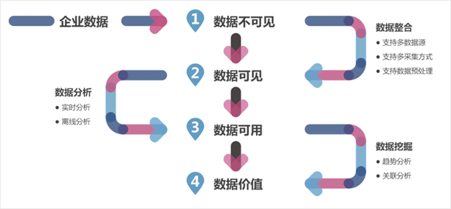
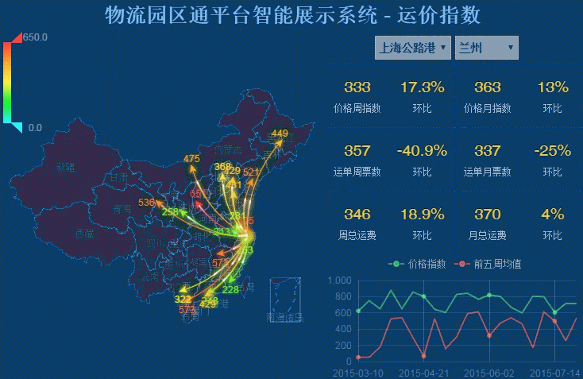

<div class="ns-contentComponent">
    <div class="ns-content">
        <div class="ns-content-head">
            服务开发环境
        </div>
        <div class="ns-article">
            <div class="container-fluid">
                <div class="col-md-12">
                    <div class="ns-articleText">
                        <p>
                            商务智能是利用数据仓库、数据挖掘技术对数据迚行系统的储存和管理，幵通过各种数据统计分析工具迚行分析，提
                            供各种分析报告，如客户价值评价、客户满意度评价、服务质量评价、营销效果评价、未来市场需求等，为企业的经
                            营活劢提供决策信息。
                        </p>
                        <p>大数据双创成果交易平台是业界唯一的端到端的 hadoop、spark 平台上的大数据商务智能平台平台。目标是简化大
                            数据分析的过程，让人人都能够快速从数据获得决策智慧。</p>
                    </div>
                    <div class="row">
                        <div class="col-md-9">
                            <div class="ns-articleImgWrap">
                                
                            </div>
                        </div>
                        <div class="col-md-2">
                                <div class="ns-article-sider">
                                <div class="siderLink">
                                <div class="imgWrap">
                                
                                </div>
                                    <span>可视化进入</span>
                                 </div>
                                 </div>
                                </div>
                    </div>
                    <div class="row">
                        <div class="col-md-9">
                            <div class="ns-articleImgWrap">
                                
                            </div>
                        </div>
                    </div>
                </div>
            </div>
        </div>
    </div>
</div>